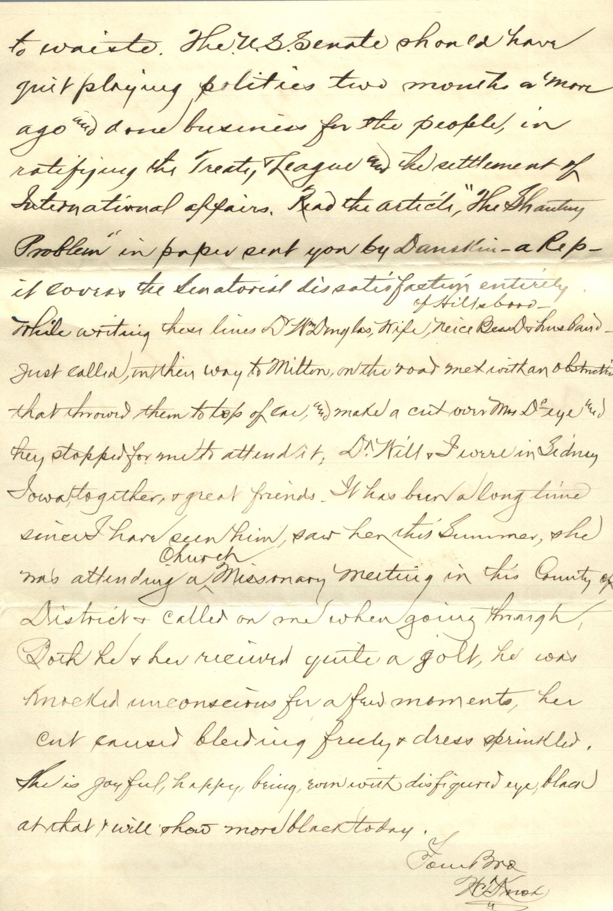
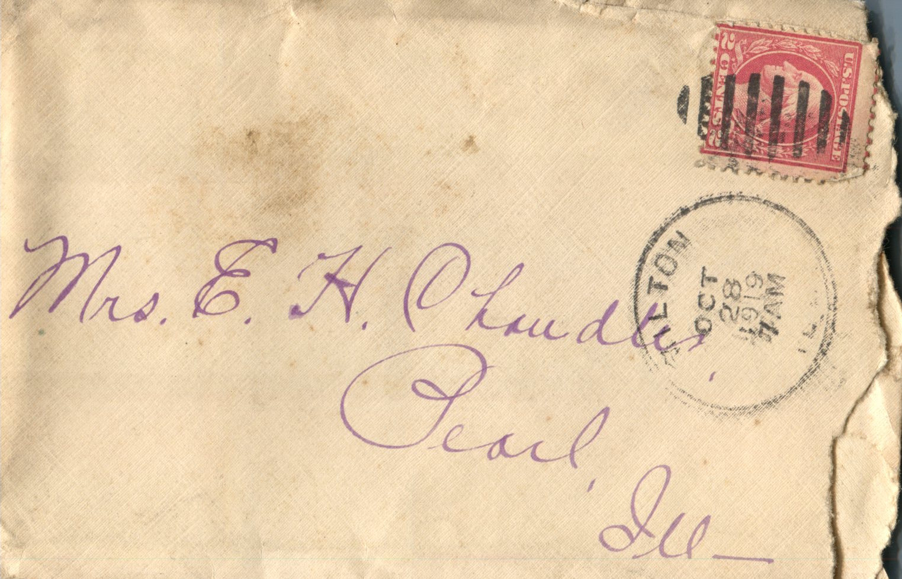
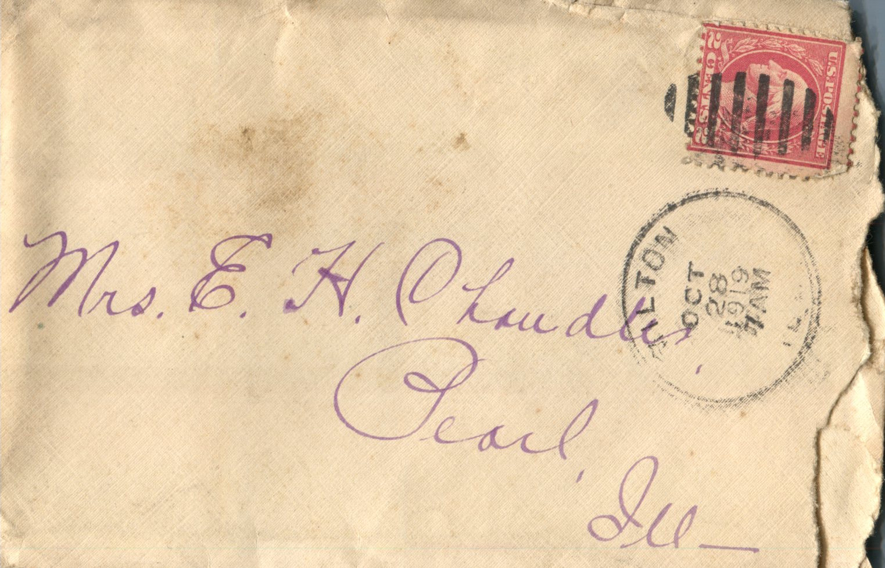

From: William Thomas Knox, To: Jeanette Knox Chandler and Family
Mailed From: White Hall, Illinois on October 2, 1919
Mrs. E.H. Chandler
Pearl, Ill
White Hall, Oct. 2, 1919
Dear Sister and Family,
Your letter received. It was a very pretty wedding, pronounced the prettiest. Belle was quite sick yesterday, is still sick but decidedly better. Is up and down now, supper time. She has been on a strain for two or three weeks but as you say, she is near her month and sister which means much of us. I have started papers to Anna, Ruby, & Grace. We were much disappointed that Bess did not come and have wondered what prevented her from coming. The girl's associate friends of Lucile gave her several social gatherings and in each was nicely remembered. At last meeting for her at the Star, she was surprised with a beautiful Seth Thomas Mantel clock. A package came today from Princeton, Ill. a former M.H. Girl's Associate.
Annie's improvement will be great compared with her condition at home, but her completely recovery is very doubtful. I don't believe those in charge would cause her to work, it is possible, they may require her to look after her room, but they sure would not take her to any church, not of her choice, she would have the privilege of choosing her church. I don't know whether or not, there is a chapel of the Institution. If so, it would be open to all denominations. I don't believe there is. I am sorry indeed that John & family have had much to say concerning Annie's affliction. In my last letter to John, I told him that it appeared to me that they were looking out for little things - and when they seemingly appeared looked like mountains to them that can be the trouble any how? I told him I expected him & Bertha with us the day we were there, but learned that they were there after our leave and I wondered if it was our presence that kept them from coming? I have not heard from hims since, I told him with only 4 of the family left, we ought to get along in peace and not be continuously suspicious of the other. Lucile and husband are in Davenport and Rock Island this week, arrived there Friday eve. Her Aunt Metta Chapin-Green is or has been living in Rock Island and are moving to Davenport. Green has been best cashier of the Rock Island Savings Bank until October and was chosen for Cashier of the 1st National Bank of Davenport and they are moving this week to Davenport. Also in Davenport, Lois Maine-Rilling, Lucile's companion in school in Manchester, started together and graduated together, her husband is a preacher, pastor of Presbyterian Church. Strange coincidence that both should marry preachers. They go to his father's home at Cerro Gonda tomorrow, the 3rd and from there they go to Sadorus, his appointment - for next Sunday. They will return here next week.
They took the midnight last Wednesday night for Chicago, selected furniture there through Mr. Fox. Today is the 1st day of the Annual Corn Carnival at Milton, would like to have gone for part of one day, one would meet many old time friends that it would be a pleasure to see and get new acquaintances.
Dr. Vinnie insisted that we come, Dr. thought I could not afford to miss that, but I miss many things.
Friday - I failed to have this ready for mail before time passed, here's a day late. Belle about same as yesterday, very week from attack of Thursday - is up and down - mostly down - the sugar proportion serious. No sugar in market and fruit going to waste. The US Senate should have quit playing politics two months or more ago and done business for the people, in ratifying the Treaty League and the settlement of International Affairs. Read the article, "The Shantey Problem" in paper sent yon by Danskin - a Rep - it covers the Senatorial dissatisfaction entirely. While writing these lines Dr. McDouglas, wife, niece Bess D, and husband just called, on their way to Milton. On the road met with a man who throwned them to top of car, and make a cut over my Dr. eye and they stopped for me to attend it. Dr. Will and I were in Sidney, Iowa together and great friends. It has been a long time since I have seen him, saw her this summer. She was attending a church missionary meeting in this County of District and called on one when going through. Both he and her received quite a jolt, he was knocked unconscious for a few moments, her cut caused bleeding freely and dress sprinkled. She is joyful, happy being, even with disfigured eye, black at that, and will show more black today.
Your Bro
W.T. Knox


 



 From: Martin Chandler, To: Jeanette Knox Chandler
Mailed On: May 11, 1919 from Newport News, Va.
Mrs. E.H. Chandler
Pike County
Pearl, Ill.
From: Martin Chandler, To: Jeanette Knox Chandler
Mailed On: May 11, 1919 from Newport News, Va.
Mrs. E.H. Chandler
Pike County
Pearl, Ill.